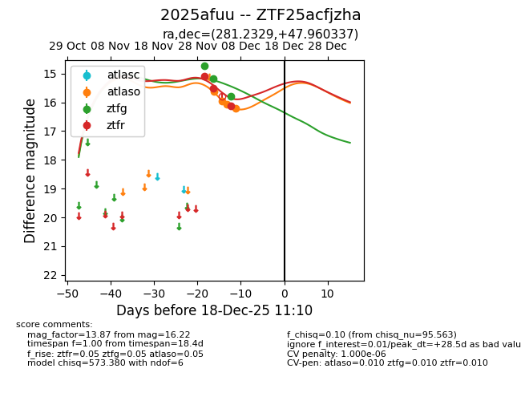
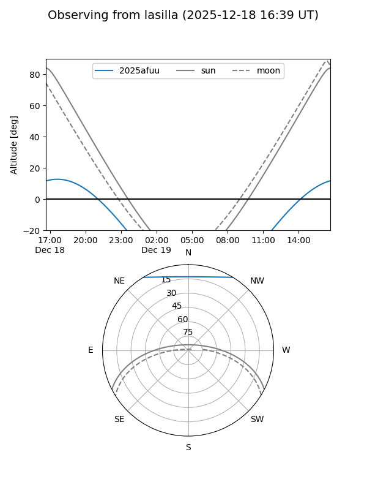
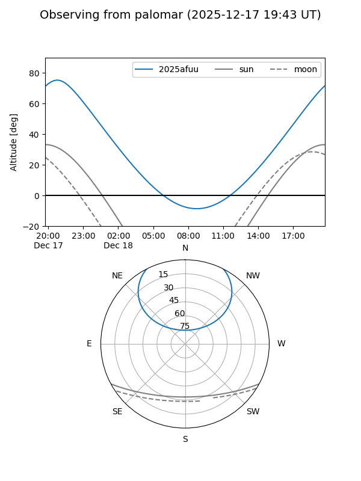
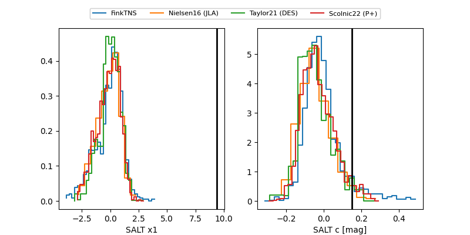

2025afuu
Target 2025afuu at 2025-12-18 11:17
Aliases and brokers:
FINK: fink-portal.org/ZTF25acfjzha
Lasair: lasair-ztf.lsst.ac.uk/objects/ZTF25acfjzha
ALeRCE: alerce.online/object/ZTF25acfjzha
TNS: wis-tns.org/object/2025afuu
YSE: ziggy.ucolick.org/yse/transient_detail/2025afuu
alt names
ZTF25acfjzha (ztf,fink_ztf)
2025afuu (tns,yse)
Coordinates:
equatorial (ra, dec) = 281.2329,+47.96034
equatorial (HMS+DMS) = 18:44:55.90,+47:57:37.21
galactic (l, b) = (77.1922,+20.82824)
Photometry
last atlaso=16.22, ztfg=15.79, ztfr=16.12
4 atlaso, 3 ztfg, 3 ztfr detections
Lightcurve

Visibility


Additional plots
